전기기사 (2003-03-16 기출문제)
1과목: 전기자기학
1. 공간 도체내의 한점에 있어서 자속이 시간적으로 변화하는 경우에 성립하는 식은?
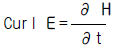
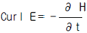
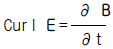
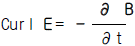
(정답률: 66%)

2. 한변의 길이가 ℓ[m]인 정사각형 도체에 전류 I[A]가 흐르고 있을 때 중심점 P의 자계의 세기는 몇 A/m 인가?
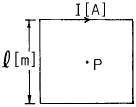
- 16π ℓI
- 4π ℓI
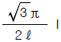
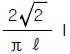
(정답률: 71%)
3. 다음 사항 중 옳은 것은?
- 텔레비젼(TV)은 전자를 발생시키는 전자총과, 전계를 걸어 전자의 방향을 구부러지게 하는 편향코일과 전자가 면에 부디치면 특정한 색깔을 내는 금속이 칠해져 있는 브라운관을 구비하고 있다.
- 자석을 영어로 마그넷트(magnet)라고 하는 이유는 고대 희랍의 마그네시아라고 불리워지는 지방에서 철을 흡인하는 돌이 취해졌기 때문이다.
- 모피(毛皮)로 호박(amber, 琥珀)을 마찰하면 그 에너지를 받아 모피에서 음전기를 띤 자유전자가 호박으로 옮겨져, 모피는 음(-)전기를 띠고 호박은 양전기(+)를 띤다.
- 쿨롱은 전계와 자계의 세기 및 음극선의 구부러지는 정도에서 전자의 비전하(전하량/질량)를 계산하였다.
(정답률: 50%)
4. 내압이 1㎸이고 용량이 각각 0.01㎌, 0.02㎌, 0.04㎌인 콘덴서를 직렬로 연결했을 때 전체 콘덴서의 내압은 몇 V 인가?
- 1750
- 2000
- 3500
- 4000
(정답률: 61%)
5. 철심이 들어있는 환상코일에서 1차코일의 권수가100회일 때 자기인덕턴스는 0.01H이었다. 이 철심에 2차코일을 200회 감았을 때 2차코일의 자기인덕턴스와 상호인덕턴스는 각각 몇 H 인가?
- 자기인덕턴스: 0.02, 상호인덕턴스: 0.01
- 자기인덕턴스: 0.01, 상호인덕턴스: 0.02
- 자기인덕턴스: 0.04, 상호인덕턴스: 0.02
- 자기인덕턴스: 0.02. 상호인덕턴스: 0.04
(정답률: 50%)
6. 내원통의 반지름 a, 외원통의 반지름 b인 동축원통 콘덴서의 내외 원통사이에 공기를 넣었을 때 정전용량이 Co이었다. 내외 반지름을 모두 3배로 하고 공기대신 비유전률 9 인 유전체를 넣었을 경우의 정전용량은?
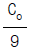
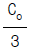
- Co
- 9Co
(정답률: 57%)
7. 분극 중 온도의 영향을 받는 분극은?
- 전자분극(electronic polarization)
- 이온분극(ionic polarization)
- 배향분극(orientational polarization)
- 전자분극과 이온분극
(정답률: 27%)
8. 그림과 같은 자기회로에서 R1, R2, R3는 각 회로의 자기 저항이고 Φ1, Φ2, Φ3는 각각 R1, R2, R3 에 투과되는 자속이라 하면 Φ3 의 값은? (단,
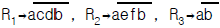
이다.)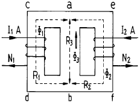
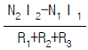
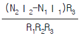
- (N2I2-N1I1)R1R2
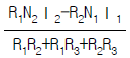
(정답률: 49%)
9. 자계의 세기 H[AT/m], 자속밀도 B[Wb/m2], 투자율 μ[H/m]인 곳의 자계의 에너지 밀도는 몇 Ｊ/m3 인가?
- BH
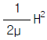
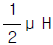
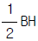
(정답률: 57%)
10. 단면적 S, 평균반지름 r, 권회수 N인 토로이드코일에 누설자속이 없는 경우, 자기인덕턴스의 크기는?
- 권선수의 자승에 비례하고 단면적에 반비례한다.
- 권선수 및 단면적에 비례한다.
- 권선수의 자승 및 단면적에 비례한다.
- 권선수의 자승 및 평균 반지름에 비례한다.
(정답률: 61%)
11. 반지름 a[m]의 원판형 전기 2중층의 중심축상 x[m]의 거리에 있는 점 P(+전하측)의 전위는 몇 V 인가? (단, 2중층의 세기는 M[C/m]이다.)
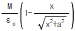
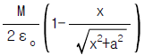
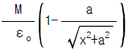
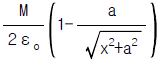
(정답률: 49%)
12. 자유공간 중에서 전위 V=xyz[V]일 때 0≤x≤1, 0≤y≤1, 0≤z≤1인 입방체에 존재하는 정전에너지는 몇 Ｊ인가?
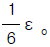
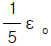
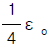
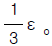
(정답률: 29%)
13. 자기회로의 자기저항에 대한 설명으로 옳은 것은?
- 자기회로의 길이에 반비례한다.
- 자기회로의 단면적에 비례한다.
- 비투자율에 반비례한다.
- 길이의 제곱에 비례하고 단면적에 반비례한다.
(정답률: 58%)
14. 그림에서 ℓ =100cm, S=10cm2, μs=100, N=1000회인 회로에 전류 I=10A를 흘렸을 때 저축되는 에너지는 몇 Ｊ 인가?
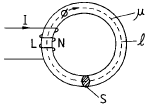
- 2πx10-1
- 2πx10-2
- 2πx10-3
- 2π
(정답률: 46%)
15. 쌍극자 모멘트가 M[C.m]인 전기쌍극자에 의한 임의의 점 P의 전계의 크기는 전기쌍극자의 중심에서 축방향과 점 P를 잇는 선분사이의 각이 얼마일 때 최대가 되는가?
- 0
- π/2
- π/3
- π/4
(정답률: 58%)
16. 유전체 역률(tanδ)과 무관한 것은?
- 주파수
- 정전용량
- 인가전압
- 누설저항
(정답률: 46%)
17.
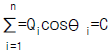
(일정)이란 전기력선 방정식이 성립할 수 있는 조건 중 틀린 것은?- 점전하 Qi가 일직선상에 있어야 한다.
- 점전하 Qi가 시간적으로 불변이어야 한다.
- 상수 C는 주위 매질에 관계없이 일정하다.
- 점전하의 주위공간은 유전률이 같아야 한다.
(정답률: 38%)
18. 반지름 a인 원형코일의 중심축상 r[m]의 거리에 있는 점 P의 자위는 몇 A 인가? (단, 점 P에 대한 원의 입체각을 ω, 전류 I를[A]라 한다.)
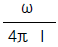
- 4πω I
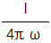
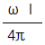
(정답률: 39%)
19. 변위전류와 가장 관계가 깊은 것은?
- 반도체
- 유전체
- 자성체
- 도체
(정답률: 70%)
20. 원통좌표계에서 전류밀도
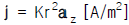
일 때 암페어의 법칙을 사용하여 자계의 세기 H 를 구하면? (단, K는 상수이다.)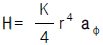
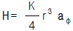
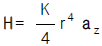
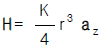
(정답률: 42%)
2과목: 전력공학
21. 3상선로에서 회로의 상규선간전압을 Vn[kV], 계통의 전전원의 용량에 상당하는 전류를 In[A], Vn과 In을 기준으로하여 %로 나타낸 %임피던스를 %Zs라 할 때 3상 단락 전류를 계산하는 식은?
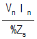
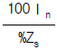
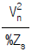
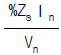
(정답률: 60%)
22. 변전소, 발전소 등에 설치하는 피뢰기에 대한 설명 중 옳지 않은 것은?
- 피뢰기의 직렬갭은 일반적으로 저항으로 되어 있다.
- 정격전압은 상용주파 정현파 전압의 최고 한도를 규정한 순시값이다.
- 방전전류는 뇌충격전류의 파고값으로 표시한다.
- 속류란 방전현상이 실질적으로 끝난 후에도 전력계통에서 피뢰기에 공급되어 흐르는 전류를 말한다.
(정답률: 44%)
23. 단도체 대신 같은 단면적의 복도체를 사용할 때 옳은 것은?
- 인덕턴스가 증가한다.
- 코로나 개시전압이 높아진다.
- 선로의 작용정전용량이 감소한다.
- 전선 표면의 전위경도를 증가시킨다.
(정답률: 58%)
24. 각 전력계통을 연락선으로 상호 연결하면 여러가지의 장점이 있다. 옳지 않은 것은?
- 각 전력계통의 신뢰도가 증가한다.
- 경제급전이 용이하다.
- 단락용량이 적어진다.
- 주파수의 변화가 적어진다.
(정답률: 61%)
25. 화력발전소에서 재열기로 가열하는 것은?
- 석탄
- 급수
- 공기
- 증기
(정답률: 66%)
26. 어느 수용가가 당초에 지상역률 80%로 60kW의 부하를 사용하고 있었는데 새로이 지상역률 60%, 40kW의 부하를 증가해서 사용하게 되었다. 이때 전력용콘덴서로 합성역률을 90%로 개선하려고 한다면 전력용콘덴서의 소요 용량은 약 몇 kVA 가 필요한가?
- 40
- 50
- 60
- 70
(정답률: 30%)
27. 송전계통의 전력용콘덴서와 직렬로 연결하는 직렬리액터로 제거되는 고조파는?
- 제2고조파
- 제3고조파
- 제5고조파
- 제7고조파
(정답률: 62%)
28. 전력회로에 사용되는 차단기의 차단용량을 결정할 때 이용되는 것은?
- 예상 최대 단락전류
- 회로에 접속되는 전부하 전류
- 계통의 최고전압
- 회로를 구성하는 전선의 최대 허용전류
(정답률: 37%)
29. 그림과 같은 전력계통의 154kV 송전선로에서 고장 지락 임피던스 Zgf를 통해서 1선 지락고장이 발생되었을 때 고장점에서 본 영상 %임피던스는? (단, 그림에 표시한 임피던스는 모두 동일 용량 즉, 100MVA기준으로 환산한 %임피던스임)
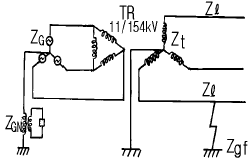
- Z0=Zℓ+Zt+Zgf+ZG+ZGN
- Z0=Zℓ+Zt+ZG
- Z0=Zℓ+Zt+Zgf
- Z0=Zℓ+Zt+3Zgf
(정답률: 57%)
30. 변압기의 %임피던스가 표준치보다 훨씬 클 때 고려하여야 할 문제점은?
- 온도 상승
- 여자돌입전류
- 기계적 충격
- 전압변동률
(정답률: 44%)
31. 변전소에 사용되는 축전지의 용량 계산에 고려되지 않는 사항은?
- 충전률
- 방전전류
- 보수율
- 용량환산시간
(정답률: 34%)
32. 수력발전소의 댐을 설계하거나 저수지의 용량 등을 결정하는데 가장 적당한 것은?
- 유량도
- 적산유량곡선
- 유황곡선
- 수위유량곡선
(정답률: 51%)
33. 차단기에서 차단시간을 옳게 설명한 것은?
- 고장발생에서부터 완전 소호시간까지의 합이다.
- 개극되는 시간을 말한다.
- 아크시간을 말한다.
- 개극과 아크시간을 합한 것을 말하며 약 3‾8사이클이다.
(정답률: 35%)
34. 송전선로의 1선 지락고장시, 인접 통신선에 대한 전자 유도장애의 방지대책이 아닌 것은?
- 전력선과 통신선과의 병행거리 단축
- 전력선과 통신선과의 이격거리 단축
- 고속도계전기 및 차단기를 채용
- 도전률이 높은 도체로 가공지선 설치
(정답률: 46%)
35. 동일 전압, 동일 부하, 동일 전력손실의 조건에서 단상 2선식의 소요전선 총량을 100 이라 할 때 3상 3선식의 소요 전선 총량은 얼마인가?
- 33
- 66
- 70
- 75
(정답률: 52%)
36. 소호리액터 접지방식에서 10%정도의 과보상을 한다고 할때 사용되는 탭의 크기로 일반적인 것은?
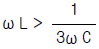
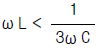
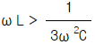
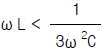
(정답률: 30%)
37. 각 수용가의 수용설비용량이 50kW, 100kW, 80kW, 60kW, 150kW이며 각각의 수용률이 0.6, 0.6, 0.5, 0.5, 0.4 일때 부하의 부등률이 1.3 이라면 변압기 용량은 약 몇 kVA가 필요한가? (단, 평균 부하역률은 80%라고 한다.)
- 142
- 165
- 183
- 211
(정답률: 53%)
38. 전압이 다른 송전선로를 루프로 사용하여 조류제어 할 때 필요한 기기는?
- 동기조상기
- 3권선변압기
- 분로리액타
- 위상조정변압기
(정답률: 39%)
39. 주상변압기의 2차측 접지공사는 어느 것에 의한 보호를 목적으로 하는가?
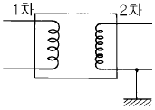
- 2차측 단락
- 1차측 접지
- 2차측 접지
- 1차측과 2차측의 혼촉
(정답률: 46%)
40. 높이가 같고 경간이 200m인 철탑에 38mm2의 경동연선을 가선할 때 이도(dip)는 몇 m 인가? (단, 경동연선의 인장하중은 1400kg, 안전율은 2.2, 전선 자체의 무게는 0.333kg/m라고 한다.)
- 2.24
- 2.62
- 3.38
- 3.46
(정답률: 47%)
3과목: 전기기기
41. 15[KW], 60[Hz], 4극의 3상 유도 전동기가 있다. 전부하가 걸렸을 때의 슬립이 4[%]라면 이때의 2차(회전자)측 동손및 2차 입력은?(오류 신고가 접수된 문제입니다. 반드시 정답과 해설을 확인하시기 바랍니다.)
- 0.4[KW], 136[KW]
- 0.62KW], 15.6[KW]
- 0.06[KW], 156[KW]
- 0.8[KW], 13.6[KW]
(정답률: 30%)
42. 보호계전기 구성요소의 기본원리에 속하지 않는 것은?
- 전자 흡인
- 전자 유도
- 정지형 스위칭 회로
- 광전관
(정답률: 45%)
43. 계자 철심에 잔류 자기가 없어도 발전되는 직류기는?
- 직권기
- 타여자기
- 분권기
- 복권기
(정답률: 57%)
44. 동기전동기의 용도가 아닌 것은?
- 크레인
- 분쇄기
- 압축기
- 송풍기
(정답률: 39%)
45. 3상 전압조정기의 원리는 어느 것을 응용한 것인가?
- 3상 동기 발전기
- 3상 변압기
- 3상 유도 전동기
- 3상 교류자 전동기
(정답률: 50%)
46. 8극 60[Hz], 500[KW]의 3상 유도 전동기의 전부하 슬립이 2.5[%]라 한다. 이때의 회전수[rps]는?
- 877
- 900
- 14.6
- 15.0
(정답률: 25%)
47. 다음중 동기발전기의 여자방식이 아닌 것은?
- 직류여자기방식
- 브러시레스 여자방식
- 정류기 여자방식
- 회전계자방식
(정답률: 26%)
48. 2방향성 3단자 다이리스터는 어느 것인가?
- SCR
- SSS
- SCS
- TRIAC
(정답률: 54%)
49. 전압변동률이 작은 동기발전기는?
- 동기리액턴스가 크다.
- 전기자 반작용이 크다.
- 단락비가 크다.
- 값이 싸진다.
(정답률: 51%)
50. 직류기에 있어서 불꽃없는 정류를 얻는데 가장 유효한 방법은?
- 탄소브러시와 보상권선
- 보극과 탄소브러시
- 자기포화와 브러시의 이동
- 보극과 보상권선
(정답률: 35%)
51. 직류 발전기의 극수 8, 전기자 도체수가 400을 단중 파권으로 하였을 때 매극의 자속수가 0.01[Wb] 이면 600[rpm]로 회전하였을 때의 기전력은 얼마인가?
- 130[V]
- 160[V]
- 180[V]
- 200[V]
(정답률: 48%)
52. 그림과 같은 유도전동기가 있다. 고정자의 회전자계가 매초 100회전하고 회전자가 매초 95회전하고 있을 때 회전자의 도체에 유기되는 기전력의 주파수[Hz]는?
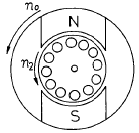
- 5
- 10
- 15
- 20
(정답률: 44%)
53. 어떤 변압기의 전압변동률은 부하역률 100[%]에서 2[%], 부하역률 80[%]에서 3[%]이다. 이 변압기의 최대 전압 변동률[%]은 약 얼마인가?
- 6.2
- 5.1
- 4.2
- 3.1
(정답률: 32%)
54. 단자전압 200[V], 전류 50[A], 15[㎾]를 소비하는 3상 유도전동기의 역률[%]은?
- 82.2
- 66.6
- 57.7
- 86.6
(정답률: 44%)
55. 분권전동기의 설명 중 가장 옳은 것은? (단, 무부하의 경우)
- 공급전압의 극성을 반대로 하면 회전방향이 바뀐다.
- 공급전압을 증가시키면 회전속도는 별로 변하지 않는다.
- 분권계자 권선의 계자조정기의 저항을 감소시키면 회전속도는 증가한다.
- 발전제동을 하는 경우에 분권계자 권선의 접속을 반대로 접속한다.
(정답률: 21%)
56. 회전 변류기의 직류측 전압을 조정하려는 방법이 아닌것은?
- 동기 승압기에 의한 방법
- 유도 전압조정 변압기를 사용하는 방법
- 직렬 리액턴스에 의한 방법
- 여자전류를 조정하는 방법
(정답률: 31%)
57. 3300[V], 60[Hz]용 변압기의 와류손이 360[W]이다. 이 변압기를 2750[V], 50[Hz]에서 사용할 때 이 변압기의 와류 손은 몇 [W]인가?
- 432
- 330
- 300
- 250
(정답률: 36%)
58. 단권 변압기(Auto transformer)에 대한 말이다.옳지 않은 것은?
- 1차 권선과 2차 권선의 일부가 공통으로 되어 있다
- 동일출력에 대하여 사용재료 및 손실이 적고 효율이 높다
- 3상에는 사용할 수 없는 단점이 있다
- 단권 변압기는 권선비가 1에 가까울수록 보통 변압기에 비하여 유리하다.
(정답률: 51%)
59. 피크 역전압 5000[V]에 견딜수 있는 정류회로 소자를 이용하여 얻어지는 무부하 직류전압 (평균치)는 3상 부리지 정류인때 약 몇[V]인가?
- 2388
- 3183
- 4775
- 1591
(정답률: 21%)
60. 동기발전기의 돌발단락 전류를 주로 제한하는 것은?
- 동기 리액턴스
- 누설 리액턴스
- 권선저항
- 역상 리액턴스
(정답률: 39%)
4과목: 회로이론 및 제어공학
61. 샘플러의 주기를 T라 할때 S-평면상의 모든점은 식 Z=eST에 의하여 Z-평면상에 사상된다. S-평면의 좌반평면상의 모든 점은 Z-평면상 단위원의 어느 부분으로 사상되는 가?
- 내점
- 외점
- 원주상의 점
- Z-평면전체
(정답률: 55%)
62. 상태방정식 X = AX + BU 인 제어계의 특성방정식은?
- │ sⅡ - B │ = Ⅱ
- │ sⅡ - A │ = Ⅱ
- │ sⅡ - B │ = 0
- │ sⅡ - A │ = 0
(정답률: 43%)
63. 60[Hz], 100[V]의 교류전압이 200[Ω ]의 전구에 인가될 때 소비되는 평균전력은 얼마인가?
- 50[watt]
- 100[watt]
- 150[watt]
- 200[watt]
(정답률: 45%)
64. 폐루우프 전달함수
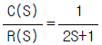
인 계에서 대역폭(帶域幅, BW)은 몇 [rad]인가?- 0.5 [rad]
- 1 [rad]
- 1.5 [rad]
- 2 [rad]
(정답률: 34%)
65. 수전단 개방시의 무손실 선로에 있어서 입력 임피던스의 절대치를 특성 임피던스와 같게 하려면 선로의 길이를 파장의 몇배로 하면 되는가?
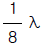
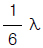
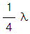
(정답률: 23%)
66. 그림과 같이 이득이 A인 연산 증폭기 회로에서 출력 전압 Vo을 나타낸 것은? (단, V1, V2, V3는 입력 신호전압이다.)
(정답률: 28%)
67. 기전력 2[V], 내부저항 0.5[Ω]의 전지 9개가 있다. 이것을 3개씩 직렬로 하여 3조 병렬 접속한 것에 부하저항 1.5[Ω]을 접속하면 부하전류[A]는?
- 1.5
- 3
- 4.5
- 5
(정답률: 36%)
68. 다음 안정도 판별법 중 G(s)H(s)의 극점과 영점이 우반평면에 있을 경우 판정불가능한 방법은?
- Routh-Hurwitz 판별법
- Bode 선도
- Nyquist 판별법
- 근궤적법
(정답률: 43%)
69. 그림과 같은 구형파의 라플라스 변환은?
(정답률: 49%)
70. 2단자 임피던스 함수 Z(s)가 Z(s)=s+3/(s+4)(s+5)일 때의 영점은?
- 4, 5
- -4, -5
- 3
- -3
(정답률: 45%)
71. 연료의 유량과 공기의 유량과의 사이의 비율을 연소에 적합한 것으로 유지하고자 하는 제어는?
- 비율제어
- 추종제어
- 프로그램제어
- 정치제어
(정답률: 45%)
72. 그림과 같은 회로의 전달함수는? ( : 시정수이다.)
- Ts2+1
- Ts+1
(정답률: 48%)
73. 그림과 같은 신호흐름선도에서 C/R를 구하면?
- a+2
- a+3
- a+5
- a+6
(정답률: 50%)
74. 는?
- e-t-te-t
- e-t+2te-t
- et-te-t
- e-t+te-t
(정답률: 33%)
75. 그림의 R-C 직렬회로에서 로 주어질 때 i(t)는?
- 10-3ㆍe-t
- 10-1ㆍe-t
- 10-2ㆍe-t
- e-t
(정답률: 33%)
76. 다음중 온도를 전압으로 변환시키는 요소는?
- 차동변압기
- 열전대
- 측온저항
- 광전지
(정답률: 56%)
77. G(s)H(s)= 에서 점근선의 교차점은?
- 2
- 5
- -4
(정답률: 39%)
78. 2개의 전력계를 사용하여 평형부하의 3상회로에 역률을 측정하고자 한다. 전력계의 지시값이 각각 P1, P2 일때 이 회로의 역률은?
- P1 + P2
(정답률: 48%)
79. 저항 R[Ω] 3개를 Y로 접속한 회로에 전압 200[V]의 3상 교류전원을 인가시 선전류가 10[A]라면 이 3개의 저항을 △로 접속하고 동일전원을 인가시 선전류는 몇[A]인가?
- 10
- 10√3
- 30
- 30√3
(정답률: 34%)
80. 그림과 같은 2단자 회로에서 반공진각주파수 ωr을 구하시오.
- 100 [rad/sec]
- 200 [rad/sec]
- 400 [rad/sec]
- 800 [rad/sec]
(정답률: 23%)
5과목: 전기설비기술기준 및 판단기준
81. 고압 지중케이블로서 직접 매설식에 의하여 콘크리트제 기타 견고한 관 또는 트라프에 넣지 않고 부설할 수 있는 케이블은?
- 비닐외장케이블
- 고무외장케이블
- 클로로프렌외장케이블
- 콤바인덕트케이블
(정답률: 49%)
82. 폭발성 또는 연소성의 가스가 침입할 우려가 있는 곳에 시설하는 지중함으로서 그 크기가 몇 m3 이상인 것에는 통풍장치 기타 가스를 방산시키기 위한 적당한 장치를 시설하여야 하는가?
- 0.5
- 0.75
- 1
- 2
(정답률: 50%)
83. 고압 가공전선로의 가공지선으로 나동복강선을 사용할 경우 지름 몇 ㎜ 이상의 것을 사용하여야 하는가?(관련 규정 개정전 문제로 여기서는 기존 정답인 4번을 누르면 정답 처리됩니다. 자세한 내용은 해설을 참고하세요.)
- 2.0
- 2.5
- 3.0
- 3.5
(정답률: 40%)
84. 154000V 특별고압 가공전선로를 시가지에 위험의 우려가 없도록 시설하는 경우, 지지물로 A종 철주를 사용한다면 경간은 최대 몇 m 이하인가?
- 50
- 75
- 150
- 200
(정답률: 23%)
85. 전기온돌 등의 전열장치를 시설할 때 발열선을 도로, 주차장 또는 조영물의 조영재에 고정시켜서 시설하는 경우, 발열선에 전기를 공급하는 전로의 대지전압은 몇 V 이하이어야 하는가?
- 150
- 300
- 380
- 440
(정답률: 49%)
86. 물기가 많고 전개된 장소에서 440V 옥내배선을 할 때 채용할 수 없는 공사의 종류는?
- 금속관공사
- 금속덕트공사
- 케이블공사
- 합성수지관공사
(정답률: 33%)
87. 흥행장의 저압 전기설비공사로 무대, 무대마루 밑, 오케스트라 박스, 영사실 기타 사람이나 무대 도구가 접촉할 우려가 있는 곳에 시설하는 저압 옥내배선, 전구선 또는 이동전선은 사용전압이 몇 V 미만이어야 하는가?
- 100
- 200
- 300
- 400
(정답률: 44%)
88. 22.9kV 배전선로(나전선)와 건조물에 취부된 안테나와의 수평 이격거리는 최소 몇 m 이상이어야 하는가?
- 1
- 1.25
- 1.5
- 2
(정답률: 26%)
89. 특별고압 가공전선로의 지지물에 시설하는 통신선 또는 이에 직접 접속하는 가공 통신선의 높이는 철도 또는 궤도를 횡단하는 경우에는 궤조면상 몇 m 이상으로 하여야 하는가?
- 5.0
- 5.5
- 6.0
- 6.5
(정답률: 43%)
90. 사용전압이 35000V이하인 특별고압 가공전선이 건조물과 제2차 접근상태로 시설되는 경우에 특별고압 가공전선로는 어떤 보안공사를 하여야 하는가?(관련 규정 개정전 문제로 여기서는 기존 정답인 2번을 누르면 정답 처리됩니다. 자세한 내용은 해설을 참고하세요.)
- 제1종 특별고압 보안공사
- 제2종 특별고압 보안공사
- 제3종 특별고압 보안공사
- 제4종 특별고압 보안공사
(정답률: 45%)
91. 발전소에는 필요한 계측장치를 시설하여야 한다. 다음 중 시설하지 않아도 되는 계측장치는?
- 발전기의 전압
- 주요 변압기의 역률
- 발전기의 고정자의 온도
- 특별고압용 변압기의 온도
(정답률: 46%)
92. 전로의 중성점 접지의 목적으로 볼 수 없는 것은?
- 대지전압의 저하
- 이상전압의 억제
- 손실전력의 감소
- 보호장치의 확실한 동작의 확보
(정답률: 40%)
93. 가공공동지선에 의한 제2종 접지공사에서 가공공동지선과 대지간의 합성 전기저항치는 몇 m 를 지름으로 하는 지역 안마다 규정하는 접지 저항치를 가지는 것으로 하여야 하는가?
- 400
- 600
- 800
- 1000
(정답률: 29%)
94. 중량물이 통과하는 장소에 비닐외장케이블을 직접 매설식으로 시설하는 경우, 매설깊이는 최소 몇 m 인가?(관련 규정 개정전 문제로 여기서는 기존 정답인 3번을 누르면 정답 처리됩니다. 자세한 내용은 해설을 참고하세요.)
- 0.8
- 1.0
- 1.2
- 1.5
(정답률: 48%)
95. 금속관공사를 콘크리트에 매설하여 시설하려고 한다. 관의 두께는 몇 ㎜ 이상이어야 하는가?
- 0.8
- 1.0
- 1.2
- 1.5
(정답률: 32%)
96. 154kV가공전선로를 제1종특별고압보안공사에 의하여 시설하는 경우 사용 전선은 단면적 몇 ㎜2 의 경동연선 또는 이와 동등 이상의 세기 및 굵기의 연선이어야 하는가?
- 38
- 55
- 100
- 150
(정답률: 40%)
97. 발, 변전소에서 차단기에 사용하는 압축공기장치의 공기 압축기는 최고 사용압력의 몇 배의 수압을 계속하여 10분간 가하여 시험한 경우 이상이 없어야 하는가?
- 1.25
- 1.5
- 1.75
- 2
(정답률: 44%)
98. 교류 전차선이 교량의 밑에 시설되는 경우, 교량의 가더 등의 금속제 부분에는 어떤 접지공사를 하여야 하는가?(관련 규정 개정전 문제로 여기서는 기존 정답인 3번을 누르면 정답 처리됩니다. 자세한 내용은 해설을 참고하세요.)
- 제1종 접지공사
- 제2종 접지공사
- 제3종 접지공사
- 특별제3종 접지공사
(정답률: 34%)
99. 220V용 유도전동기의 철대 및 금속제 외함에 적합한 접지 공사는?
- 제1종 접지공사
- 제2종 접지공사
- 제3종 접지공사
- 특별제3종 접지공사
(정답률: 42%)
100. 사용전압이 몇 V 이상의 중성점 직접 접지식 전로에 접속하는 변압기를 설치하는 곳에는 절연유의 구외 유출 및 지하 침투를 방지하기 위하여 절연유 유출 방지설비를 하여야 하는가?
- 25000
- 50000
- 75000
- 100000
(정답률: 38%)
$nabla times E = -frac{partial B}{partial t}$
여기서 $nabla times E$는 전기장의 회전을 나타내는 회전벡터이고, $frac{partial B}{partial t}$는 시간에 따른 자기장의 변화율을 나타내는 벡터입니다. 이 식은 자기장이 변화할 때 전기장이 유도되어 생기는 전기력이 자기력과 같다는 것을 나타내는 중요한 식입니다.